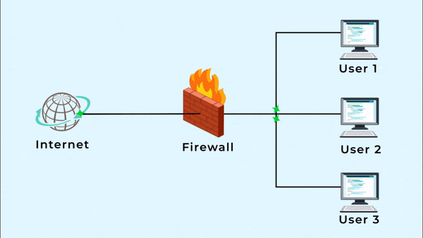
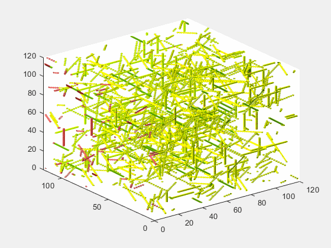
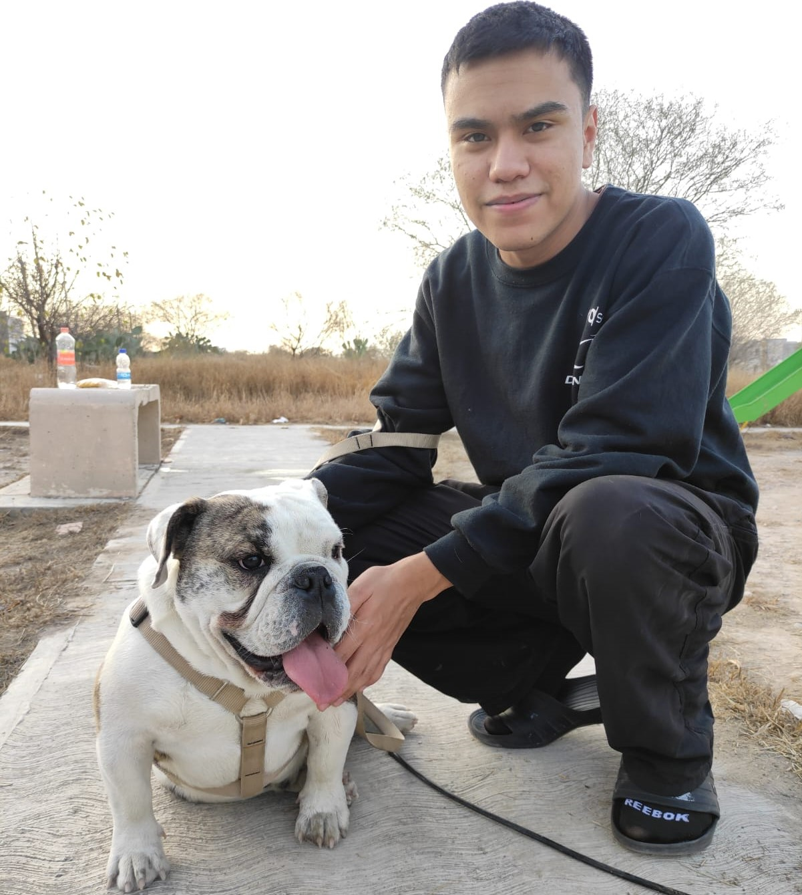
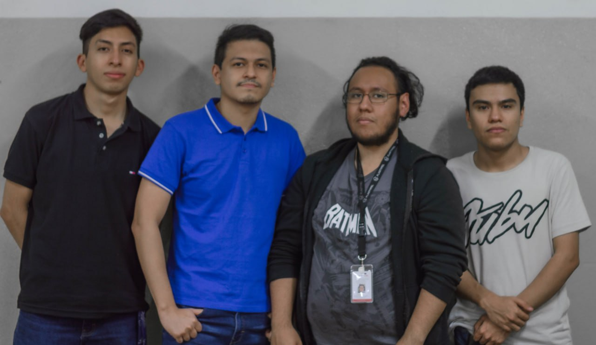

Te presentamos la mejor manera de proteger tu empresa
Te protegemos contra ciber-amenazas enfocándonos en estándares globales establecidos
por la OWASP
(Open Web Application Security Project) y NIST
(National Institute of Standards and Technology) ofreciendo además servicios de inteligencia para tu empresa.
Te hablaremos sobre CyberDEVS...
CyberDEVS es un concepto que nació en el año 2022 por un grupo de estudiantes de la carrera de ingeniería
en sistemas que buscan ofrecer a empresas la seguridad que su organización necesita, a través de auditorías
de pentesting siguiendo estándares globales de seguridad, además de ofrecer servicios de inteligencia
en los cuales nosotros nos encargamos de revisar aquellas fugas de información que tu organización
(por medio del personal) pueda tener.
Nuestro proceso de investigación está basado en sistemas utilizados por la CIA:
Implementación de sus firewalls
Análisis de fuga de información
Auditorias de pentesting
Análisis de vulnerabilidades
Análisis de trafico de red
Dentro de nuestro servicio de pentesting nos encargaremos de dar un reporte ejecutivo detallando las
vulnerabilidades encontradas junto con las pruebas de los análisis con las cuales nosotros te orientaremos
a que de solución a su vulnerabilidad y volver a auditar el lugar donde se genera el incidente.
¿Qué servicios ofrecemos?
Implementación de sus firewalls

Los firewalls han constituido una primera línea de defensa en seguridad de la red durante más de 25 años.
Establecen una barrera entre las redes internas protegidas y controladas en las que se puede confiar y
redes externas que no son de confianza, como Internet. Con esa dinámica, evitará que los usuarios de internet
no autorizados puedan ingresar a la red corporativa. De igual modo, restringe a los colaboradores para
que no puedan acceder a servicios externos que no están permitidos.
Analisis de fuga de informacion
Una fuga de datos es la pérdida de confidencialidad de la información de una organización,
empresa o individuo, mediante la obtención de la misma o el conocimiento del contenido de esta por parte
de personas no autorizadas para ello. A menos que se apliquen diligentemente los controles adecuados,
cabe esperar que la información acabe en las manos de gente no deseada. Incluso implementando controles,
el riesgo de una fuga de información no desaparece.
Auditorias de pentesting
El pentesting o test de penetración consiste en atacar diferentes entornos o sistemas con el objetivo de
detectar y prevenir posibles fallos. Se trata de una técnica para encontrar aquellos errores en el sistema.
Es una de las prácticas más demandadas actualmente, ya que gracias a este tipo de exámenes las empresas
pueden poner remedio a sus debilidades antes de que lo hagan los ciberdelincuentes.
Analisis de vulnerabilidades
El análisis de vulnerabilidad consiste en definir, identificar, clasificar y priorizar las debilidades de
las aplicaciones para proporcionar una evaluación de las amenazas previsibles y reaccionar de manera
apropiada. Organizaciones que se encuentran en mayor riesgo de sufrir ciber-ataques, sin importar su tamaño,
pueden beneficiarse de las evaluaciones de vulnerabilidad para hacer que sus entornos sean más seguros.
Auditorias de trafico de red

Es el proceso de evaluación de la seguridad y el rendimiento de una red de computadoras. Durante una
auditoría de red, un auditor evalúa la configuración de la red y los dispositivos de seguridad, así como
el tráfico de red y el uso de recursos. Los resultados de la auditoría de red se pueden utilizar para
mejorar la seguridad y el rendimiento de la red.
¡Contacta con nuestros miembros!
Actualmente CyberDEVS cuenta con 4 miembros disponibles y totalmente capacitados para cualquier cita, ya sea
virtual (Zoom o Teams) o presencial. Con gusto se le atenderá de la mejor y atenta forma posible.
Ing. Miguel Angel Ayala Medrano
Ingeniero en sistemas especializado en ciberseguridad y soporte técnico.
Ing. Junior Javier Facundo Saldaña
Ingeniero en sistemas especializado en redes computacionales y soporte técnico.

Ing. Oscar Isaac Soto Zapata
Ingeniero en sistemas especializado en soporte técnico.
Ing. Eder Aldair Soto Sifuentes
Ingeniero en sistemas especializado en desarrollo web frontend.
Puede contactarse con nosotros mediante los siguientes medios:
Preguntas frecuentes hechas por el cliente
¿Por qué solo son 4 miembros?
CyberDEVS tiene poco tiempo desde su inauguración por lo tanto actualmente solamente se encuentran los
creadores de este proyecto disponibles para dar servicios, sin embargo, se planea integrar a más personas
al proyecto.
¿Por qué debería confiar en recién egresados?

A pesar de ser alumnos recién egresados de la universidad tenemos un espíritu indomable el cual queremos
aprovechar para darle la mejor atención al cliente, con nuestra corta experiencia le daremos un servicio de
calidad inmensurable.
¿Cuánto es el costo de sus servicios?
Los costos de nuestros servicios variaran dependiendo del lugar, horario, problema y rapidez. Para una
mayor información contacte con nuestros miembros.
¿Brindan servicio internacional?
Actualmente solamente brindamos servicios presenciales en México, fuera de México nos contactamos de manera
virtual.
¿Cualquier miembro está disponible para viajar a otros estados (México)?
Actualmente todos los miembros de CyberDEVS cuentan con disponibilidad para viajar dentro de la república,
aun así, nunca está de más contactar con ellos y preguntar personalmente.

 El pentesting o test de penetración consiste en atacar diferentes entornos o sistemas con el objetivo de
detectar y prevenir posibles fallos. Se trata de una técnica para encontrar aquellos errores en el sistema.
Es una de las prácticas más demandadas actualmente, ya que gracias a este tipo de exámenes las empresas
pueden poner remedio a sus debilidades antes de que lo hagan los ciberdelincuentes.
El pentesting o test de penetración consiste en atacar diferentes entornos o sistemas con el objetivo de
detectar y prevenir posibles fallos. Se trata de una técnica para encontrar aquellos errores en el sistema.
Es una de las prácticas más demandadas actualmente, ya que gracias a este tipo de exámenes las empresas
pueden poner remedio a sus debilidades antes de que lo hagan los ciberdelincuentes.